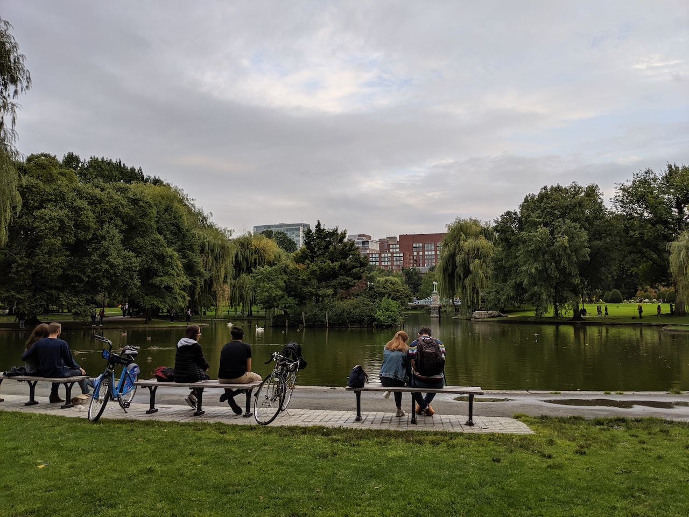
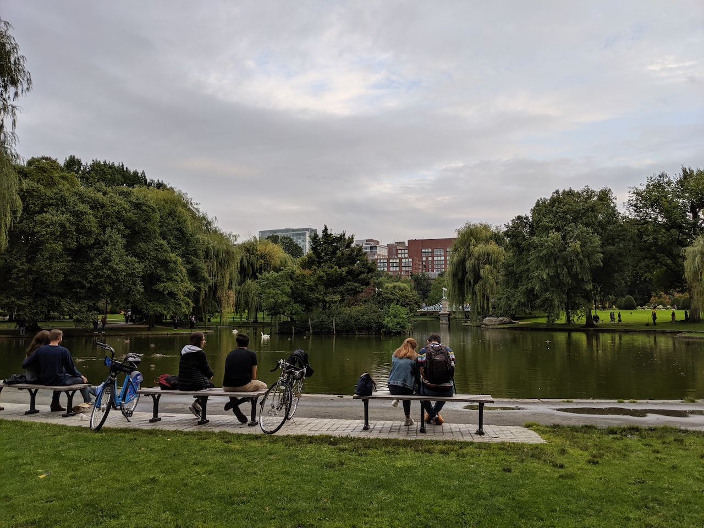

波士頓兩天一日 - Day 1
龍蝦之旅 – 初訪波士頓
9/14-9/15 期待很久的波士頓2天一夜！
交通 (NYC <-> Boston)
紐約到波士頓很方便有長途巴士可以搭，美國比較常見的巴士就是Greyhound 和 Megabus，票價大約$20上下，但這次跟朋友一起開車去，車程大約四個半小時，所以其實這次在波士頓時間也很短暫，必須要二訪才行哈哈。
住宿
這次住在Hampton Inn and Suites Boston/Waltham，因為市區的住宿都巨貴，剛好這次開車去就選了一個離 Boston Downtown 20分鐘車程的地方，飯店很新住起來很舒服，早餐也滿多選項的！讚讚
波士頓小簡介
 波士頓為麻薩諸塞州（麻州）的最大城，也是新英倫區（New England）人口最多的城市，波士頓很小，佔地只有232.1平方公里，卻有高達69萬居民，人口密度很高，但還是不及台北和曼哈頓哈哈。
波士頓為麻薩諸塞州（麻州）的最大城，也是新英倫區（New England）人口最多的城市，波士頓很小，佔地只有232.1平方公里，卻有高達69萬居民，人口密度很高，但還是不及台北和曼哈頓哈哈。
美國的東北區又被稱作New England 地區，包含了六個州： Maine, Vermont, New Hampshire, Massachusetts, Rhode Island, 和 Connecticut
波士頓蘊含許多歷史故事，是美國最古老的城市之一，1630年，由英國的清教徒移民（Puritan）建立，歷史課本學到的一些美國獨立戰爭就是在波士頓爆發的：
- 波士頓大屠殺 (Boston Massacre)
- 波士頓傾茶事件 (Boston Tea Party)
- 邦克山戰役 (Battle of Bunker Hill)
- 波士頓之圍 (Siege of Boston)
喜歡歷史的人一定要來波士頓走一趟”自由之路”！
自由之路（Freedom Trail）
全長共 2.5 mile(4km)，經過16個歷史景點，跟著紅磚走就對了！ 這次礙於時間因素只去了三個，太可惜了。

- Boston Common 建於1634年，是全美第一座公園，自由之路的起點。
- Massachusetts State House 麻州議會大廈，這塊土地曾經屬於第一任州長John Hancock所有，他是美國開國元老之一，也是第一位在獨立宣言上簽字的人。


波士頓公共花園 (Boston Public Garden)
從 Boston Common 多走幾個路口就會到波士頓公共花園，現在的公園直到1800初還是泥灘，後來才慢慢開始填土成陸地，花園在1837年完成。

 

公園內有一個大湖，佔地4 acres (16,000 m2)，是鴨子和天鵝們的家，可以搭乘天鵝船觀光，但當天不知是天氣不好還是太晚，沒看到有遊客在搭船。 Swan Boats
公園內也有很多有名的雕像，在 Arlington Street gate 那端有著名的 equestrian statue of George Washington

在 Charles and Beacon streets entrance 的著名雕像是出自於童話書 Make Way for Ducklings 的小鴨雕像
昆西市場 (Quincy Market)
昆西市場位於市中心，離 Faneuil Hall不遠，當初建造昆西市場是為了擴大Faneuil Hall的商業需求。建於1824年，以建造昆西市場的市長 Josiah Quincy 命名，為19世紀上半美國最大的市場建築之一。

由 Alexander Parris 設計，昆西市場共有兩層樓，有點像美食街，很長的美食街，總長 535 feet (163 m)，一樓是攤販區，二樓是座位區


昆西市場周遭有很多小攤販和店家，很適合逛街:)
可愛的大茶壺星巴克

尋找美食
- Pauli’s - 65 Salem St, Boston, MA 02113 Lobster roll！！滿滿的龍蝦～但價格不菲，這樣小小一個要20鎂
- Mount Vernon Restaurant & Pub - 14 Broadway, Somerville, MA 02145
想吃cp值超高的龍蝦就要來這！！兩隻大龍蝦才22鎂(歡呼聲) 他們的龍蝦是整隻下去煮，沒幫你切開，所以在吃的時候超嫩超多汁。 還有一顆1 dollar的生蠔！相較於厲害的生蠔店他就小顆很多，但才1塊錢沒什麼好挑惕的哈哈，很新鮮很好吃。